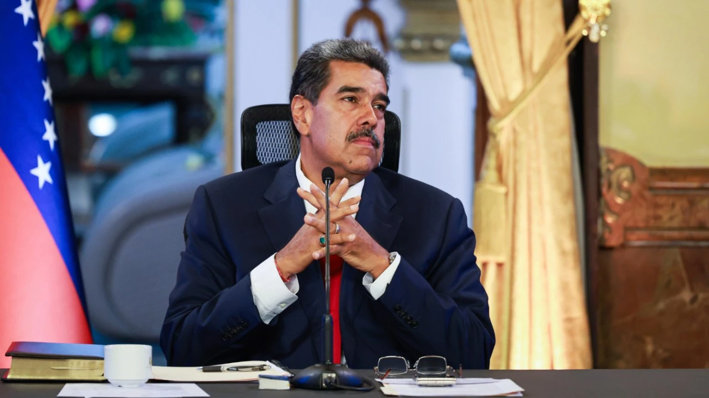

THE HILL ·
Pope Leo XIV condemned Putin. Will he confront Maduro next?
Read the original
Earlier this week, Nicolás Maduro’s regime in Venezuela staged parliamentary and regional elections stripped of any legitimacy. The leading opposition coalition, led by María Corina Machado and Edmundo González Urrutia, boycotted the vote after key candidates were barred and electoral conditions rendered fair competition impossible. Maduro’s party declared near-total victory, seizing 253 of 277 seats and 23 of 24 governorships. For most Venezuelans, it was not an election – it was a farce.
Just over two weeks earlier, white smoke had risen over St. Peter’s Square in Rome, announcing the election of Cardinal Robert Prevost as Pope Leo XIV. Shortly after, the Kyiv Independent reported on a previously published interview with the Peruvian outlet Semanario Expresión, in which the then-cardinal denounced Russia’s war on Ukraine as “a true invasion, imperialist in nature, where Russia seeks to conquer territory for reasons of power.”
Though spoken before his election, the statement stands out for its moral clarity, especially in contrast to the often-diplomatic language of the late Pope Francis, who was frequently criticized for his reluctance to condemn authoritarian regimes, even on his home continent.
A member of the Order of Saint Augustine, Pope Leo XIV spent decades in pastoral and missionary work in Peru’s impoverished Chiclayo region, embodying what it means to be “American” in the universal, catholic sense. His Augustinian roots – and his choice of the name Leo – have drawn early attention. Likely a nod to Leo XIII, who guided the Church’s response to modern social upheaval, the new pope’s new name, coupled with his motto, “In Illo Uno Unum” (“In the One, we are one”), reflects a charism of interiority, communal life and the restless pursuit of truth rooted in both faith and reason.
Yet the decisiveness of his remarks suggests not only a theological commitment but a cultural one. Although he is the first American pope, “Papa León XIV” speaks with a distinctly Hispanic moral urgency – shaped, perhaps, by the rugged, impoverished and spiritually rich Andes.
That urgency calls to mind another León: Luis de León, the 16th-century Augustinian poet and friar, and a towering figure of the School of Salamanca. In 1582, he was imprisoned by the Inquisition and held for nearly five years in the Convent of San Pablo in Valladolid, Spain, accused of heresy by rivals who feared both his intellect and his outspoken defense of Scripture and human liberty.
Pope Leo XIV’s invocation of Augustinian tradition and prophetic clarity in denouncing the Kremlin’s war invites a powerful comparison. And there are others, too, in that same lineage of Hispanic, Catholic conscience.
In 1511, Dominican friar Antonio de Montesinos delivered a sermon in Santo Domingo condemning the Spanish Crown’s treatment of native peoples. Accusing the colonizers of mortal sin “by reason of the cruelty and tyranny” they practiced, the humble friar inspired the first international human rights debate. He set a precedent for a Church willing to speak truth to power.
Morally shaken, by 1512, King Ferdinand of Aragon issued the Laws of Burgos – the first legal code intended to regulate the treatment of Indigenous people in the Americas.
By 1537, the moral shockwaves of Montesinos’s sermon were still rippling through the Catholic world. Similarly inspired, Pope Paul III issued the papal bull Sublimis Deus, declaring that Indigenous peoples were fully human, possessed rational souls, and held an inherent right to liberty and property. It was the first of many such declarations coming from both the Hispanic world and the Vatican.
Four centuries later, Salvadoran archbishop Oscar Romero showed similar courage. On March 24, 1980, shortly after ordering the regime’s repression to end in the name of God, Romero was assassinated while celebrating Mass in San Salvador. “In the name of this suffering people,” he cried out in his final homily, moments before his martyrdom, “whose cries rise to heaven each day more tumultuous; I beseech you, I beg you, I order you … stop the repression.”
But the model of courageous witness extends beyond the Hispanic World. When St. Pope John Paul II urged the world to “be not afraid” in his inaugural homily in 1978, it was more than spiritual advice. His encyclical Redemptor Hominis, released months later, condemned communism as a system that denied human dignity and freedom. During his visit to Poland in 1979, he awakened a national conscience and laid the groundwork for the fall of Soviet totalitarianism. The communist security apparatus stood no chance against the will of a free people guided by the Spirit.
Yet the Maduro regime remains unchallenged by the papacy. Once one of Hispanic America’s wealthiest nations, Venezuela is now defined by hunger, repression, collapsed infrastructure and one of the world’s highest homicide rates. Inflation hit 130,060 percent in 2018; today, nearly 80 percent of the population lives below the poverty line. More than 7.7 million Venezuelans have fled since 2015, creating the largest displacement crisis in the Western Hemisphere.
For the Hispanic Scholastics, such debasement would not be seen merely a failure of policy, but rather a form of tyranny. As Jesuit Juan de Mariana wrote in his 1609 De Monetae Mutatione: “If the prince is not the master but, rather, the administrator of the private possessions of his subjects, then he is not allowed to take away arbitrarily any part of their possessions for this or any other reason, as occurs whenever money is debased, … And if the prince is not empowered to levy taxes on unwilling subjects and cannot set up monopolies over merchandise, then neither is he empowered to make fresh profit by debasing money, because this tactic aims at the same thing, namely, robbing the people of their wealth.”
In this moment of deepening catastrophe, Hispanic America needs its first “Peruvian” pope to act not just as a global statesman but as a prophetic voice in the wilderness.
His clear condemnation of Russia was a bracing sign of moral leadership. That same clarity would offer hope to Venezuelans facing violence, starvation and exile – the loss of home and human dignity.
For millions of Venezuelans, just like millions of others suffering across the globe, that sense of exile is existential, and perhaps unbearable without a sense of hope. As Uruguayan poet Mario Benedetti wrote about his own experience with exile, “I sense that within the country I no longer recognize lies the one I always knew.”
It is to that Venezuela, and its scattered people, that the Holy Father must now speak.
In Evangelii Gaudium, Pope Francis wrote that “each individual Christian and every community is called to be an instrument of God for the liberation and promotion of the poor … attentive to the cry of the poor and to come to their aid.” Now, Catholics across the world wonder whether Pope Leo XIV’s voice will rise in defense of Venezuela’s dignity and pain, answering the cry heard so clearly across history and in the witness of the Gospel.